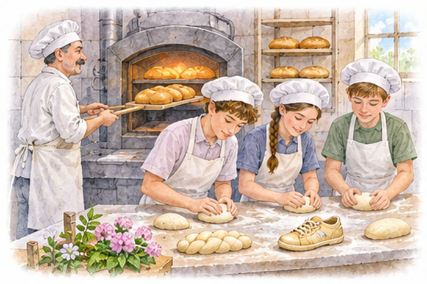

Listen to the text
Speed:

In Ukraine guests are met with bread and salt. We never throw bread away. Before a new loaf is cut, some grandmothers still make a small cross on it with a knife. Last month our class visited a farm and a bakery to see where bread comes from. "The work is started in autumn," said the farmer, Mr Stepan. "The soil is prepared, and winter wheat is sown in September. In winter the young plants are covered by snow, like a blanket. If there is no snow, the plants can be killed by frost." "In spring the fields are checked every week. In July the wheat is harvested. In the past it was cut by hand, and the whole village worked from morning till night. Today it is done by combines. One machine can do the work of a hundred people." The grain is taken to a mill, where it is turned into flour. Then the flour is delivered to bakeries. At the bakery we were given white hats. The baker showed us everything. "The flour is mixed with water, salt and yeast. The dough is left for a few hours. Then it is shaped and baked in a hot oven. The first bread is taken out at four in the morning, and by six it is sold in the shops." We were allowed to make our own small loaves. Mine looked like a shoe, but it was eaten in two minutes. "Remember," said the baker. "A loaf of bread was touched by a hundred hands before it came to your table." I haven't left a piece of bread on my plate since that day.
Tap any sentence to hear it again.
Сподобалось? На сайті ще більше матеріалів для вчителів!
Reader, презентації, ігри, діагностичні та контрольні роботи до підручників 1-11 класів.
Перейти на сайт materials.allaenglish.com